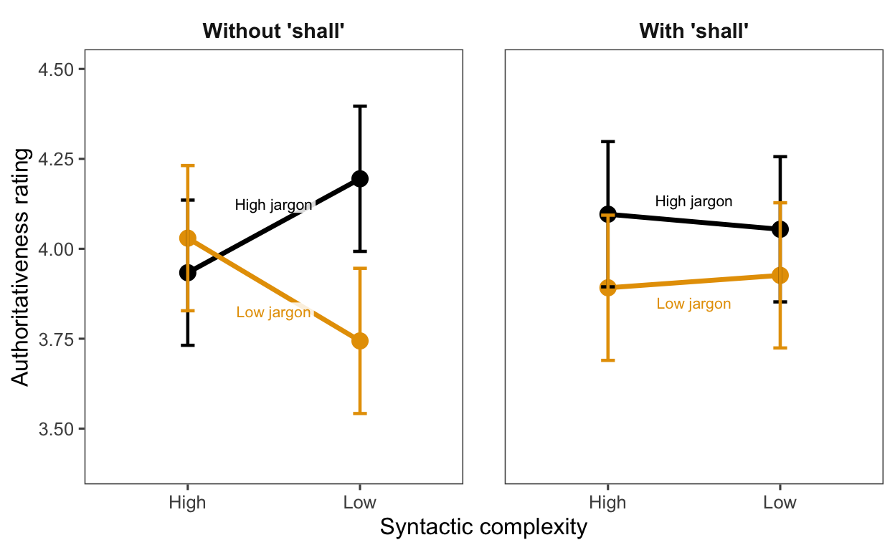

Show code
library(tidyverse)
library(jsonlite)
library(lme4)
library(lmerTest)
library(emmeans)
library(ggthemes)The socio-pragmatic function of linguistic complexity in the domain of law
library(tidyverse)
library(jsonlite)
library(lme4)
library(lmerTest)
library(emmeans)
library(ggthemes)# Load all participant CSVs
data_dir <- "../data/full_sample/full_sample"
files <- list.files(data_dir, pattern = "\\.csv$", full.names = TRUE)
df_raw <- purrr::map_dfr(files, ~ readr::read_csv(.x, show_col_types = FALSE) %>%
mutate(source_file = basename(.x)))
# Create participant IDs
file_map <- tibble(source_file = sort(unique(df_raw$source_file))) %>%
mutate(participant_file = sprintf("no.%03d", row_number()))
df <- df_raw %>%
left_join(file_map, by = "source_file")
# Fill condition info across trial phases
df <- df %>%
arrange(participant_file, trial_index, time_elapsed) %>%
group_by(participant_file, sent_id) %>%
fill(condition, syn_level, sem_level, modal_pres, .direction = "downup") %>%
ungroup()
cat("Participants:", n_distinct(df$participant_file), "\n")Participants: 203 cat("Total rows:", nrow(df), "\n")Total rows: 13398 # Parse comprehension response from JSON
parse_comp_response <- function(x) {
if (is.na(x)) return(NA_character_)
tryCatch({
parsed <- jsonlite::fromJSON(x)
if (!is.null(parsed$comp)) return(parsed$comp)
return(NA_character_)
}, error = function(e) NA_character_)
}
# Compute accuracy (comp_correct has extra quotes that need stripping)
df <- df %>%
mutate(
comp_response_parsed = purrr::map_chr(response, parse_comp_response),
comp_correct_clean = gsub('^"|"$', '', comp_correct),
is_correct = ifelse(
phase == "comprehension",
trimws(comp_response_parsed) == trimws(comp_correct_clean),
NA
)
)# Authority ratings dataframe
authority_df <- df %>%
filter(phase == "authority_rating") %>%
select(participant_file, sent_id, authority_rating, syn_level, sem_level, modal_pres)
# Comprehension dataframe
comp_df <- df %>%
filter(phase == "comprehension") %>%
select(participant_file, sent_id, is_correct, syn_level, sem_level, modal_pres)
# Combined dataframe (for comprehension-authority analysis)
combined_df <- authority_df %>%
inner_join(
comp_df %>% select(participant_file, sent_id, is_correct),
by = c("participant_file", "sent_id")
)
cat("Authority observations:", nrow(authority_df), "\n")Authority observations: 3248 cat("Comprehension observations:", nrow(comp_df), "\n")Comprehension observations: 3248 comp_df %>%
summarise(
Accuracy = mean(is_correct, na.rm = TRUE),
N_correct = sum(is_correct, na.rm = TRUE),
N_total = n()
) %>%
mutate(Accuracy = sprintf("%.1f%%", Accuracy * 100)) %>%
knitr::kable(caption = "Overall comprehension accuracy")| Accuracy | N_correct | N_total |
|---|---|---|
| 89.6% | 2911 | 3248 |
authority_df %>%
group_by(syn_level, sem_level, modal_pres) %>%
summarise(
Mean = mean(authority_rating, na.rm = TRUE),
SD = sd(authority_rating, na.rm = TRUE),
N = n(),
.groups = "drop"
) %>%
arrange(syn_level, sem_level, modal_pres) %>%
knitr::kable(digits = 2, caption = "Authority ratings by condition")| syn_level | sem_level | modal_pres | Mean | SD | N |
|---|---|---|---|---|---|
| high | high | S | 4.10 | 1.04 | 406 |
| high | high | partial_may | 3.93 | 1.06 | 406 |
| high | low | S | 3.89 | 1.19 | 406 |
| high | low | partial_may | 4.03 | 1.07 | 406 |
| low | high | S | 4.05 | 1.05 | 406 |
| low | high | partial_may | 4.19 | 1.04 | 406 |
| low | low | S | 3.93 | 1.10 | 406 |
| low | low | partial_may | 3.74 | 1.10 | 406 |
We fit a linear mixed-effects model with:
Random slopes were not included due to sparse within-cell observations (2 items per condition per participant), which caused singular fit.
model_3way <- lmer(
authority_rating ~ syn_level * sem_level * modal_pres +
(1 | participant_file) + (1 | sent_id),
data = authority_df
)
summary(model_3way)Linear mixed model fit by REML. t-tests use Satterthwaite's method [
lmerModLmerTest]
Formula: authority_rating ~ syn_level * sem_level * modal_pres + (1 |
participant_file) + (1 | sent_id)
Data: authority_df
REML criterion at convergence: 8863.1
Scaled residuals:
Min 1Q Median 3Q Max
-3.9805 -0.5116 0.1233 0.6220 2.9512
Random effects:
Groups Name Variance Std.Dev.
participant_file (Intercept) 0.39506 0.6285
sent_id (Intercept) 0.01352 0.1163
Residual 0.77165 0.8784
Number of obs: 3248, groups: participant_file, 203; sent_id, 16
Fixed effects:
Estimate Std. Error df t value
(Intercept) 3.93350 0.10298 11.96954 38.196
syn_levellow 0.26108 0.13160 7.99991 1.984
sem_levellow 0.09606 0.13160 7.99991 0.730
modal_presS 0.16256 0.13160 7.99991 1.235
syn_levellow:sem_levellow -0.54680 0.18611 7.99991 -2.938
syn_levellow:modal_presS -0.30296 0.18611 7.99991 -1.628
sem_levellow:modal_presS -0.30049 0.18611 7.99991 -1.615
syn_levellow:sem_levellow:modal_presS 0.62315 0.26320 7.99991 2.368
Pr(>|t|)
(Intercept) 7.08e-14 ***
syn_levellow 0.0825 .
sem_levellow 0.4863
modal_presS 0.2518
syn_levellow:sem_levellow 0.0188 *
syn_levellow:modal_presS 0.1422
sem_levellow:modal_presS 0.1451
syn_levellow:sem_levellow:modal_presS 0.0454 *
---
Signif. codes: 0 '***' 0.001 '**' 0.01 '*' 0.05 '.' 0.1 ' ' 1
Correlation of Fixed Effects:
(Intr) syn_lv sm_lvl mdl_pS syn_:_ sy_:_S sm_:_S
syn_levellw -0.639
sem_levellw -0.639 0.500
modal_presS -0.639 0.500 0.500
syn_lvllw:_ 0.452 -0.707 -0.707 -0.354
syn_lvll:_S 0.452 -0.707 -0.354 -0.707 0.500
sm_lvllw:_S 0.452 -0.354 -0.707 -0.707 0.500 0.500
syn_lv:_:_S -0.319 0.500 0.500 0.500 -0.707 -0.707 -0.707# Test the three-way interaction
anova(model_3way)Type III Analysis of Variance Table with Satterthwaite's method
Sum Sq Mean Sq NumDF DenDF F value Pr(>F)
syn_level 0.0114 0.0114 1 7.9999 0.0148 0.90617
sem_level 5.2601 5.2601 1 7.9999 6.8167 0.03109 *
modal_pres 0.0493 0.0493 1 7.9999 0.0638 0.80690
syn_level:sem_level 2.4652 2.4652 1 7.9999 3.1947 0.11169
syn_level:modal_pres 0.0033 0.0033 1 7.9999 0.0043 0.94938
sem_level:modal_pres 0.0055 0.0055 1 7.9999 0.0071 0.93495
syn_level:sem_level:modal_pres 4.3254 4.3254 1 7.9999 5.6054 0.04542 *
---
Signif. codes: 0 '***' 0.001 '**' 0.01 '*' 0.05 '.' 0.1 ' ' 1The three-way interaction is significant (p = .045), indicating that the effect of jargon depends on both syntactic complexity and modal presence.
To interpret the three-way interaction, we examine the effect of jargon at each combination of syntax and modal presence.
# Get estimated marginal means
emm_3way <- emmeans(model_3way, ~ syn_level * sem_level * modal_pres)
# Simple effects of jargon within each syntax × modal combination
jargon_contrasts <- contrast(emm_3way, method = "pairwise", by = c("syn_level", "modal_pres"))
summary(jargon_contrasts)syn_level = high, modal_pres = partial_may:
contrast estimate SE df z.ratio p.value
high - low -0.0961 0.132 Inf -0.730 0.4654
syn_level = low, modal_pres = partial_may:
contrast estimate SE df z.ratio p.value
high - low 0.4507 0.132 Inf 3.425 0.0006
syn_level = high, modal_pres = S:
contrast estimate SE df z.ratio p.value
high - low 0.2044 0.132 Inf 1.553 0.1203
syn_level = low, modal_pres = S:
contrast estimate SE df z.ratio p.value
high - low 0.1281 0.132 Inf 0.973 0.3304
Degrees-of-freedom method: asymptotic # Create a cleaner summary table
simple_effects <- as.data.frame(summary(jargon_contrasts)) %>%
filter(grepl("high - low", contrast)) %>%
mutate(
Syntax = ifelse(syn_level == "high", "High", "Low"),
Modal = ifelse(modal_pres == "S", "With shall", "Without shall"),
`Jargon effect (Δ)` = sprintf("%.2f", -estimate), # flip sign for high-low
`z` = sprintf("%.2f", -z.ratio),
`p` = ifelse(p.value < .001, "< .001", sprintf("%.3f", p.value)),
Sig = ifelse(p.value < .05, "*", "")
) %>%
select(Syntax, Modal, `Jargon effect (Δ)`, z, p, Sig)
knitr::kable(simple_effects, caption = "Simple effects of jargon (high - low) at each syntax × modal combination")| Syntax | Modal | Jargon effect (Δ) | z | p | Sig |
|---|---|---|---|---|---|
| High | Without shall | 0.10 | 0.73 | 0.465 | |
| Low | Without shall | -0.45 | -3.43 | < .001 | * |
| High | With shall | -0.20 | -1.55 | 0.120 | |
| Low | With shall | -0.13 | -0.97 | 0.330 |
Key finding: Jargon significantly increases authority ratings only when syntax is low AND shall is absent (Δ = 0.45, z = 3.43, p < .001).
combined_df %>%
group_by(is_correct) %>%
summarise(
Mean = mean(authority_rating, na.rm = TRUE),
SD = sd(authority_rating, na.rm = TRUE),
N = n(),
SE = SD / sqrt(N),
.groups = "drop"
) %>%
mutate(Comprehension = ifelse(is_correct, "Correct", "Incorrect")) %>%
select(Comprehension, Mean, SD, N, SE) %>%
knitr::kable(digits = 2, caption = "Authority ratings by comprehension accuracy")| Comprehension | Mean | SD | N | SE |
|---|---|---|---|---|
| Incorrect | 3.72 | 1.04 | 337 | 0.06 |
| Correct | 4.01 | 1.09 | 2911 | 0.02 |
# Compute participant-level means
participant_means <- combined_df %>%
group_by(participant_file) %>%
summarise(
comp_accuracy = mean(is_correct, na.rm = TRUE),
mean_authority = mean(authority_rating, na.rm = TRUE),
.groups = "drop"
)
# Between-person correlation
cor_test <- cor.test(participant_means$comp_accuracy, participant_means$mean_authority)
cat("Between-person correlation:\n")Between-person correlation:cat(sprintf("r = %.2f, t(%d) = %.2f, p = %.3f\n",
cor_test$estimate, cor_test$parameter, cor_test$statistic, cor_test$p.value))r = 0.25, t(201) = 3.70, p = 0.000To determine whether the comprehension-authority relationship is driven by between-person differences (stable individual differences) or within-person variation (trial-by-trial), we decompose the effect.
# Create within and between components
combined_df <- combined_df %>%
group_by(participant_file) %>%
mutate(
comp_between = mean(is_correct, na.rm = TRUE), # participant mean
comp_within = is_correct - comp_between # deviation from participant mean
) %>%
ungroup()
# Model with within and between components
within_between_model <- lmer(
authority_rating ~ comp_within + comp_between + (1 | participant_file) + (1 | sent_id),
data = combined_df
)
summary(within_between_model)Linear mixed model fit by REML. t-tests use Satterthwaite's method [
lmerModLmerTest]
Formula:
authority_rating ~ comp_within + comp_between + (1 | participant_file) +
(1 | sent_id)
Data: combined_df
REML criterion at convergence: 8847.1
Scaled residuals:
Min 1Q Median 3Q Max
-3.9610 -0.5165 0.1467 0.6161 2.9441
Random effects:
Groups Name Variance Std.Dev.
participant_file (Intercept) 0.36882 0.6073
sent_id (Intercept) 0.02393 0.1547
Residual 0.77124 0.8782
Number of obs: 3248, groups: participant_file, 203; sent_id, 16
Fixed effects:
Estimate Std. Error df t value Pr(>|t|)
(Intercept) 2.831e+00 3.168e-01 2.063e+02 8.935 2.3e-16 ***
comp_within 8.905e-02 5.738e-02 3.036e+03 1.552 0.120786
comp_between 1.286e+00 3.472e-01 2.010e+02 3.704 0.000274 ***
---
Signif. codes: 0 '***' 0.001 '**' 0.01 '*' 0.05 '.' 0.1 ' ' 1
Correlation of Fixed Effects:
(Intr) cmp_wt
comp_within 0.000
comp_betwen -0.982 0.000The within-between decomposition reveals that the association is entirely between-person: the between-person effect is significant, but the within-person effect is not, indicating that the relationship reflects stable individual differences rather than trial-by-trial variation in understanding.
# Get emmeans for plotting
emm_df <- as.data.frame(emm_3way) %>%
mutate(
Syntax = factor(ifelse(syn_level == "high", "High", "Low"), levels = c("High", "Low")),
Jargon = factor(ifelse(sem_level == "high", "High jargon", "Low jargon"),
levels = c("High jargon", "Low jargon")),
Modal = factor(ifelse(modal_pres == "S", "With 'shall'", "Without 'shall'"),
levels = c("Without 'shall'", "With 'shall'"))
)
# Create labels at midpoint of each line
label_df <- emm_df %>%
group_by(Modal, Jargon) %>%
summarise(
y_mid = mean(emmean),
.groups = "drop"
) %>%
mutate(
x_mid = 1.5,
label = as.character(Jargon),
y_offset = ifelse(Jargon == "High jargon", 0.06, -0.06)
)
# Plot
p_3way <- ggplot(emm_df, aes(x = Syntax, y = emmean, color = Jargon, group = Jargon)) +
geom_line(linewidth = 1.2) +
geom_point(size = 3.5) +
geom_errorbar(aes(ymin = asymp.LCL, ymax = asymp.UCL), width = 0.08, linewidth = 0.8) +
geom_label(data = label_df,
aes(x = x_mid, y = y_mid + y_offset, label = label, color = Jargon),
size = 2.8, label.padding = unit(0.15, "lines"),
linewidth = 0, fill = "white", alpha = 0.85,
show.legend = FALSE) +
facet_wrap(~ Modal) +
scale_color_colorblind() +
scale_y_continuous(limits = c(3.4, 4.5), breaks = seq(3.5, 4.5, 0.25)) +
labs(
x = "Syntactic complexity",
y = "Authoritativeness rating"
) +
theme_few(base_size = 12) +
theme(
legend.position = "none",
strip.text = element_text(size = 11, face = "bold"),
panel.spacing = unit(1.5, "lines")
)
p_3way
ggsave("../paper/figure_results.pdf", p_3way, width = 6.5, height = 4)
ggsave("../paper/figure_results.png", p_3way, width = 6.5, height = 4, dpi = 300)sessionInfo()R version 4.5.2 (2025-10-31)
Platform: aarch64-apple-darwin25.0.0
Running under: macOS Tahoe 26.2
Matrix products: default
BLAS: /opt/homebrew/Cellar/openblas/0.3.30/lib/libopenblasp-r0.3.30.dylib
LAPACK: /opt/homebrew/Cellar/r/4.5.2_1/lib/R/lib/libRlapack.dylib; LAPACK version 3.12.1
locale:
[1] en_US.UTF-8/en_US.UTF-8/en_US.UTF-8/C/en_US.UTF-8/en_US.UTF-8
time zone: America/Los_Angeles
tzcode source: internal
attached base packages:
[1] stats graphics grDevices utils datasets methods base
other attached packages:
[1] ggthemes_5.2.0 emmeans_2.0.1 lmerTest_3.1-3 lme4_1.1-38
[5] Matrix_1.7-4 jsonlite_2.0.0 lubridate_1.9.4 forcats_1.0.1
[9] stringr_1.6.0 dplyr_1.1.4 purrr_1.2.0 readr_2.1.6
[13] tidyr_1.3.2 tibble_3.3.0 ggplot2_4.0.1 tidyverse_2.0.0
loaded via a namespace (and not attached):
[1] gtable_0.3.6 xfun_0.55 lattice_0.22-7
[4] tzdb_0.5.0 numDeriv_2016.8-1.1 vctrs_0.6.5
[7] tools_4.5.2 Rdpack_2.6.4 generics_0.1.4
[10] parallel_4.5.2 pkgconfig_2.0.3 RColorBrewer_1.1-3
[13] S7_0.2.1 lifecycle_1.0.4 compiler_4.5.2
[16] farver_2.1.2 textshaping_1.0.4 htmltools_0.5.9
[19] yaml_2.3.12 pillar_1.11.1 nloptr_2.2.1
[22] crayon_1.5.3 MASS_7.3-65 reformulas_0.4.3
[25] boot_1.3-32 nlme_3.1-168 tidyselect_1.2.1
[28] digest_0.6.39 mvtnorm_1.3-3 stringi_1.8.7
[31] splines_4.5.2 fastmap_1.2.0 grid_4.5.2
[34] cli_3.6.5 magrittr_2.0.4 withr_3.0.2
[37] scales_1.4.0 bit64_4.6.0-1 timechange_0.3.0
[40] estimability_1.5.1 rmarkdown_2.30 bit_4.6.0
[43] ragg_1.5.0 hms_1.1.4 coda_0.19-4.1
[46] evaluate_1.0.5 knitr_1.51 rbibutils_2.4
[49] mgcv_1.9-3 rlang_1.1.6 Rcpp_1.1.0
[52] glue_1.8.0 vroom_1.6.7 minqa_1.2.8
[55] R6_2.6.1 systemfonts_1.3.1